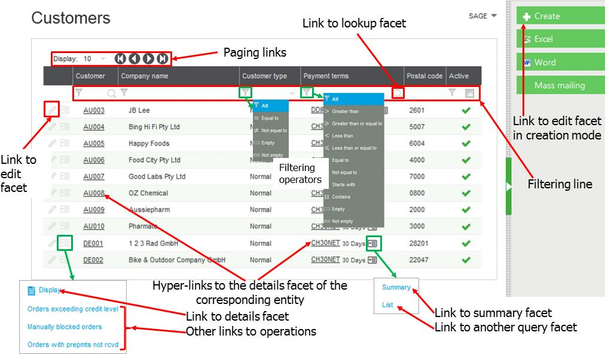
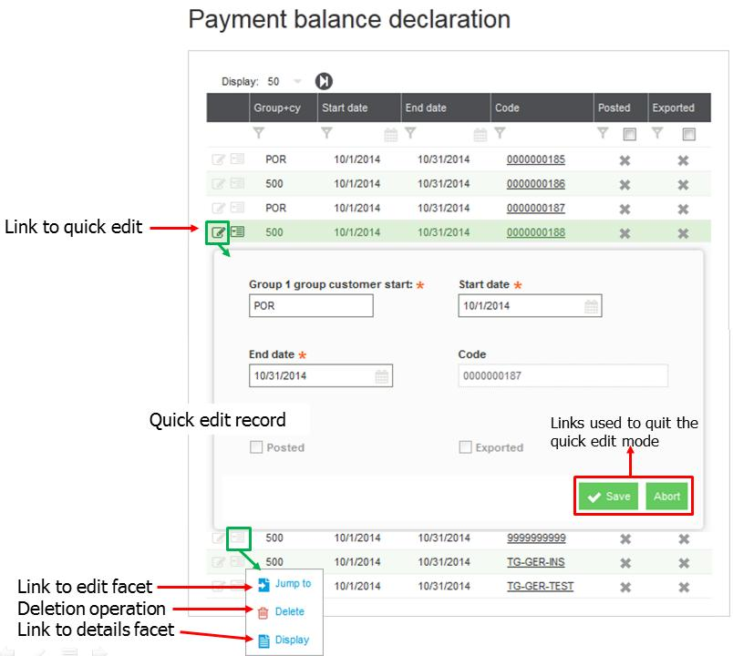
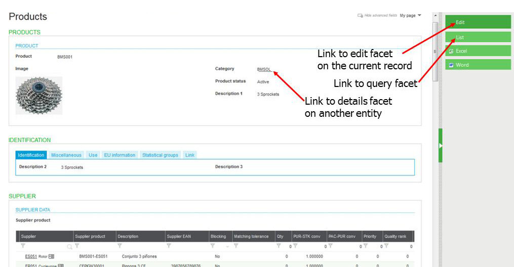
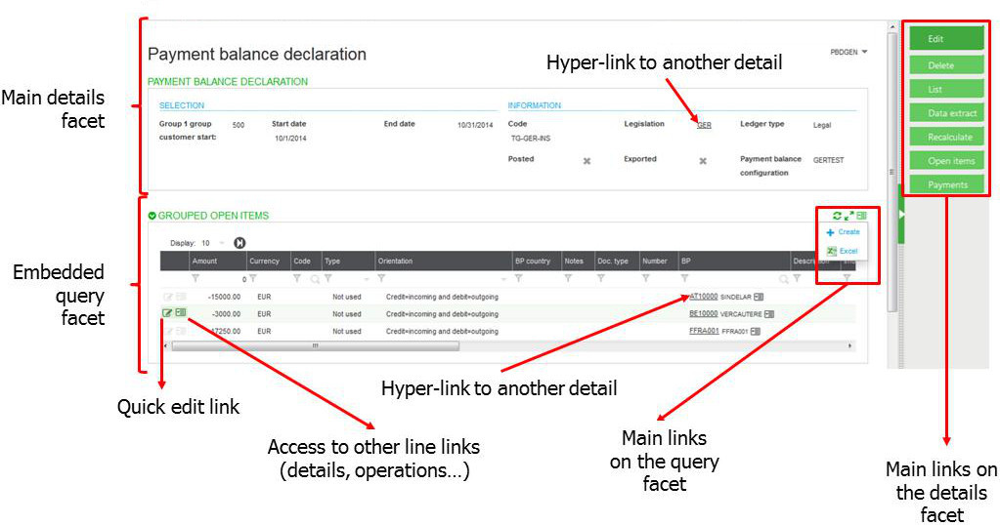
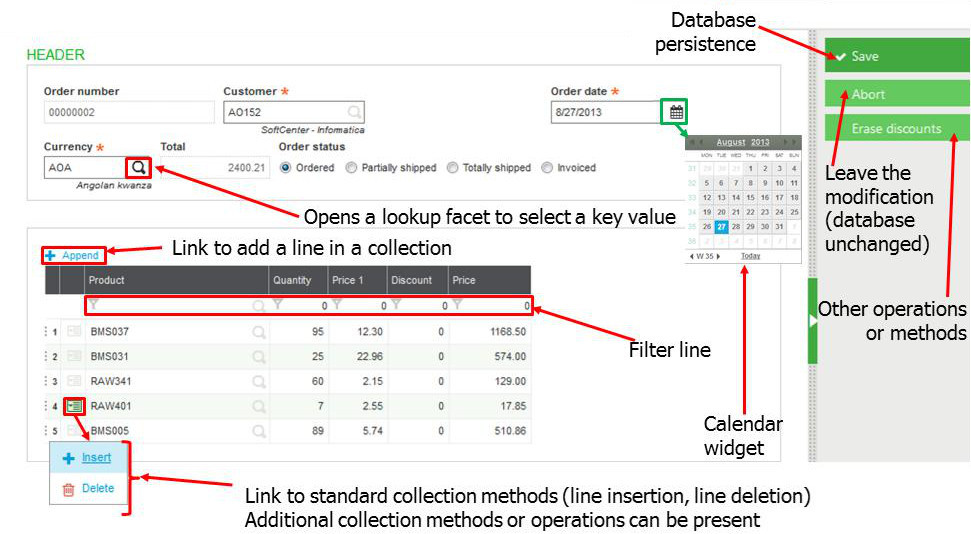
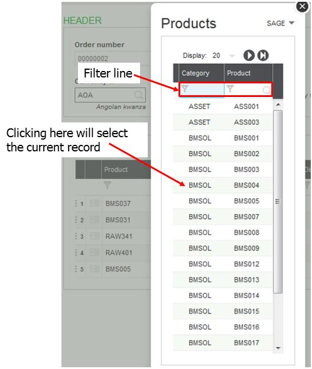
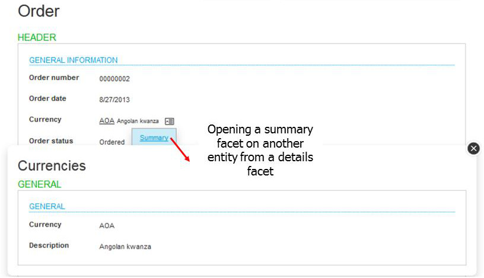

Representation pages
A standard page of Sage X3 Warehousing is described by a representation defined in the corresponding dictionary.
A representation can be used in several facets, a facet being a use case of a representation:
- The query facet defines the list of items of an entity (defined in the class dictionary).
- The details facet displays the detail of an entity record.
- The edit facet is used to create a new instance of an entity or to update an existing instance. A quick edit can also be displayed directly from the query facet to edit the current line.
- The summary facet is used to display a summarized view of the instance of an entity.
- The lookup facet for entity selection.
Query facet
Usually, users enter a query facet that displays a list of records. This facet runs in stateless mode: no context is stored on the server after the query execution.
From there, several links are available, depending on the user's access rights:
* Paging links to go to the previous, first, next or last page of the query. The page length can also be selected.
* A detail link on every record. Usually, this link is displayed as a standard hyperlink: the entity key is underlined and opens the detail facet.
* An edit link on every record. This link is available as the first item on the menu icon. It can also be present as a pen icon if the quick edit option is not present.
* A create link located on the right bar is used to enter the edit facet in creation mode.
The first line of the query is usually blank with a filter. You can filter records in the list by entering values on the columns to be filtered. The default operators are: contains for a character field, and = equal to for a numeric field. Clicking on the filter icon (present on every field) enables you to change the operator. On columns associated with an entity, a magnifying glass icon opens a lookup facet that enables choosing a value for selection.
Other navigation hyperlinks are present in pop-up menus that appear when clicking on the menu icon located near some fields. These hyperlinks can be:
* navigation to details,
* summary, or query facets for other entities;
* an operation launched for the current record of the corresponding entity.
Layout of a query and links:

Quick edit panel
When a quick edit link is available in the query facet:
- the first icon on the line is different. Click it to open the quick edit panel.
- the edit facet is available from another link called Jump to, present in the pop up menu that opens when clicking the second item on the menu icon.
The Quick Edit panel:

The quick edit mode behaves exactly like the edit facet, with the following differences:
* Because it is a "state" facet, the user must leave the mode by clicking the Save or Abort link before navigating to another field on the page.
* Only fields that are present in the query facet and the edit facet are displayed.
* Only fields that are modifiable on the edit facet can be modified.
Details facet
The details facet displays the detail of a record. This facet and query are both stateless. Entering in this facet is usually done:
* From a link on a line in a query.
* From a hyperlink on a reference to the corresponding record in a query, details, or summary facet.
* From a hyperlink displayed in the result of a search.
The following links are available on the details facet, depending on the user's access rights:
* A link present on the left panel that returns the query facet.
* A link present on the left panel that opens the edit facet.
* Additional hyperlinks to an different details facet or a summary facet on fields that are references to other records.
* Additional links present on the page that trigger operations.
Example of a details facet:

Embedded queries in a details facet
Details facets can display one or more query facets simultaneously. This happens when a link is defined as "embedded" in the representation definition. Then, the query facet is displayed at the same time as the main details facet. Usually, the query facet data is filtered according to the main facet data.
As both facets are stateless, links from either facet can be used to navigate. The link can be present on:
* Any field on the main facet or the query facet (links to details: the detail facet will replace the current page).
* Any operation on a query line.
* Any link present on the main details facet (on the right menu bar) or on the query facet (a popup menu available on the top right corner of the query).
* A quick edit operation on the query line is also possible.
Example of an embedded query facet:

Note that a free facet, (a facet that displays a web page) can be displayed at the same time as the details facet. This enables you to display the customer's home web page on the same page as the customer details.
Edit facet
The edit facet is called from a details facet by using the Edit link, or from a query facet by using the Create link. The edit facet is stateless. This means that a context is maintained on the server (called working copy) as long as the update has not been saved or aborted.
Note that the Edit facet can be replaced by a classic page for functions originating in version 6 that have not been rewritten in version 7 style code.
In this facet, we can have the following links:
* Links to helpers such as lookups on fields that reference another entity or calendars for dates.
* A save link on the right panel that triggers the persistence operation (usually in database).
* An abort link on the right panel that returns to the details facet without saving modifications.
* Additional global operations or methods on the current record.
* Links associated to grids (collections of lines) that enable adding or deleting lines as well as managing operations or methods on the lines.
* Filters on the collection lines to display only the lines that meet the filtering conditions.
A typical edit facet:

Lookup facet
The lookup facet is stateless, and is used to select a record key that opens as a popup on an edit or query facet.
It is launched from a field that is a reference on another entity. Filtering and paging can be done. Clicking on a line performs a selection and returns the current value.
A typical lookup facet:

Summary facet
The summary facet is stateless and is used to display a simplified view of a record. It has the same behavior as a detail facet, except that it opens as a popup.
A typical summary facet:
